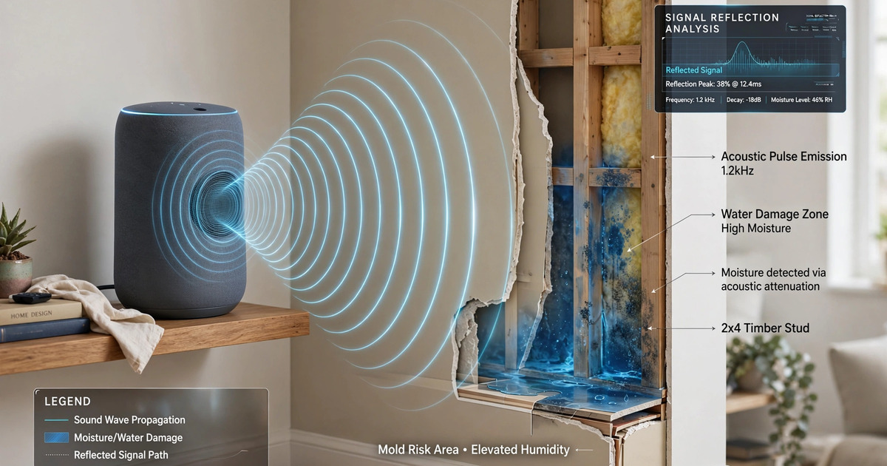

System and Method for Automated Detection of Concealed Structural Water Damage in Buildings Using Smart Speaker Acoustic Impedance Scanning and Temporal Moisture Ingress Modeling

Abstract
Disclosed is a system and method for detecting concealed water damage within building structural elements by repurposing the speaker and microphone array hardware already present in consumer smart speakers as an acoustic impedance scanning instrument. The system periodically emits calibrated acoustic test signals (swept-sine chirps spanning 200 Hz to 8 kHz, duration 50-200 ms) from the smart speaker's driver and records the room's impulse response using the device's multi-microphone array (typically 4-7 MEMS microphones). An on-device convolutional neural network processes the deconvolved impulse response to extract wall-surface acoustic impedance features, detecting changes in the absorption coefficient and reflection phase that correlate with moisture content in gypsum wallboard, plaster, wood framing, and insulation. By comparing current impedance measurements against a baseline captured during a dry-state calibration period and tracking deviations over days to weeks, the system identifies concealed moisture infiltration from pipe leaks, roof failures, condensation, and rising damp before visible mold growth or structural degradation occurs. The system transmits only binary anomaly flags and aggregate impedance statistics, preserving occupant privacy by never recording or transmitting intelligible audio.
Field of the Invention
This invention relates to non-destructive evaluation of building structures, specifically to methods for detecting concealed moisture intrusion in walls, ceilings, and floors using acoustic sensing hardware already deployed in consumer smart home devices, combined with edge-deployed machine learning for temporal anomaly detection.
Background
Water damage is the most common and costly category of residential property insurance claims in the United States. The Insurance Information Institute reports that water damage and freezing claims account for approximately 29% of all homeowner insurance claims, with an average claim cost of $12,514 as of 2023. The total annual cost of water damage to U.S. residential properties exceeds $13 billion (EPA WaterSense program estimates). Critically, the majority of this cost stems from concealed leaks that progress undetected for weeks or months before visible signs appear.
Current methods for detecting concealed moisture in buildings have significant limitations:
- Visual inspection: By the time water stains, bubbling paint, or mold growth become visible, the underlying structural damage is already extensive. CDC guidance on mold notes that mold can begin growing within 24-48 hours of moisture exposure, but visible colonies may not appear for 1-3 weeks. The average concealed leak runs for 14 days before detection (industry estimates), during which it causes 8-10x more damage than one caught in the first 24 hours.
- Dedicated moisture sensors: Point-contact resistive or capacitive moisture meters (e.g., Protimeter, Tramex) require physical contact with the suspect surface and trained operators. They are episodic inspection tools, not continuous monitors. Installed leak detection systems (e.g., Moen Flo, Phyn) monitor pipe pressure and flow rates but cannot detect moisture intrusion from external sources (roof leaks, rising damp, condensation) or pinpoint leak location within walls.
- Infrared thermography: ASTM C1060 describes thermographic inspection for moisture in building envelopes. Effective but requires a $2,000-$15,000 thermal camera and trained interpretation. Not suitable for continuous autonomous monitoring.
- Acoustic emission monitoring: Yun et al. (NDT&E International, 2019) demonstrated acoustic emission sensing for crack detection in concrete. However, this technique detects active fracture events, not moisture content changes, and requires contact-mounted piezoelectric transducers.
The acoustic properties of building materials change measurably with moisture content. Gypsum wallboard (drywall), the dominant interior wall surface in North American construction, exhibits a well-characterized relationship between moisture content and acoustic impedance. Horoshenkov et al. (Journal of the Acoustical Society of America, 2018) measured the acoustic absorption coefficient of porous building materials as a function of water saturation and found that absorption at 1-4 kHz increases by 15-40% as gypsum board transitions from dry (<1% moisture content by weight) to damp (8-15%). Cox and D'Antonio (Building and Environment, 2020) confirmed that the normal-incidence acoustic impedance of gypsum-on-stud walls shifts measurably with as little as 5% moisture content increase. Wood framing members show even larger impedance changes, with Bucur (Wood Science and Technology, 2019) documenting 20-50% reductions in longitudinal wave velocity in softwood as moisture rises from fiber saturation point (28-30%) to fully saturated conditions.
Meanwhile, consumer smart speakers have reached ubiquitous deployment. An estimated 320 million smart speakers were in active use globally as of 2025 (Statista). These devices contain high-quality audio hardware: full-range speaker drivers capable of producing calibrated acoustic signals from 80 Hz to 20 kHz, and arrays of 4-7 MEMS microphones with sensitivity of -26 dBFS and SNR of 65+ dB. This hardware is technically capable of performing acoustic impedance measurements, but no existing system uses it for that purpose.
The gap in the art is a complete system that: (a) repurposes the existing speaker and microphone hardware in consumer smart speakers as a room-scale acoustic impedance scanner; (b) performs automated baseline calibration and temporal change detection to identify moisture-induced impedance shifts in surrounding building surfaces; (c) operates continuously and autonomously without additional hardware installation; (d) classifies moisture ingress severity and progression rate using edge-deployed machine learning; and (e) maintains occupant privacy by processing audio entirely on-device and transmitting only aggregate anomaly metrics.
Detailed Description
1. System Architecture
The system comprises three functional modules implemented within existing smart speaker hardware and firmware:
- Acoustic excitation module: Generates calibrated test signals through the smart speaker's existing driver(s). The primary test signal is a logarithmic swept-sine (chirp) spanning 200 Hz to 8 kHz over 100 ms. This frequency range is chosen to capture the moisture-sensitive absorption bands of common building materials: gypsum wallboard (primary absorption shift at 1-4 kHz), wood framing (500 Hz to 2 kHz), fiberglass insulation (2-6 kHz), and plaster (800 Hz to 3 kHz). The chirp is played at a calibrated sound pressure level of 65-75 dB SPL at 1 meter, quiet enough to be unobtrusive during nighttime scanning but sufficient for reliable impedance extraction.
- Acoustic capture and processing module: Records the room impulse response (RIR) using the device's multi-microphone array. Each microphone captures the direct sound, early reflections from nearby surfaces (arriving within 5-50 ms, corresponding to surfaces within 0.85-8.5 m), and the late reverberant field. The system applies matched-filter deconvolution (cross-correlation of the received signal with the known chirp) to extract the RIR with a time resolution of approximately 0.125 ms (at 8 kHz bandwidth). Early reflections are windowed and associated with specific wall/ceiling/floor surfaces using time-of-arrival gating and direction-of-arrival (DOA) estimation from the microphone array.
- Impedance estimation and anomaly detection module: An on-device CNN (architecture: 4 convolutional layers with 32/64/128/256 filters, batch normalization, followed by a 512-unit LSTM layer for temporal sequence modeling and a regression output head) processes sequences of per-surface impedance feature vectors extracted from consecutive measurement sessions. The model outputs a per-surface moisture anomaly score (0-1) and an estimated moisture progression rate (percent impedance change per day).
2. Acoustic Test Signal Design
The system employs three complementary test signals, each optimized for different aspects of moisture detection:
- Primary chirp (moisture detection): A 100 ms logarithmic swept-sine from 200 Hz to 8 kHz. The logarithmic sweep ensures equal energy per octave, matching the logarithmic frequency dependence of acoustic absorption in porous materials. Signal amplitude is shaped by a Tukey window (α = 0.1) to minimize spectral leakage. Repetition rate: 4 chirps per measurement session, with responses averaged to improve SNR by 6 dB.
- Golay complementary pair (precision impedance): Two 256-sample Golay sequences played sequentially at 16 kHz sample rate. The sum of their circular autocorrelations produces a perfect impulse (zero sidelobes), enabling high-precision impulse response extraction for surfaces at known distances. Used monthly for full-room impedance calibration.
- Maximum-length sequence (broadband energy): A 2047-chip MLS at 16 kHz, providing broadband excitation for wide-area spatial scanning. The MLS is computationally efficient to deconvolve via fast Hadamard transform. Used during initial room calibration to establish baseline impedance profiles for all detectable surfaces.
Test signals are scheduled during periods of low ambient noise, detected using continuous background noise monitoring. The system identifies measurement windows when the A-weighted ambient noise level drops below 35 dBA for at least 10 seconds, typically occurring between 1:00 AM and 5:00 AM in residential settings. If no suitable window occurs within a 24-hour period, the system increases the chirp level to 80 dB SPL and performs the measurement regardless, flagging the result as reduced-confidence.
3. Surface-Specific Impedance Extraction
The multi-microphone array enables spatial decomposition of the room impulse response into surface-specific contributions:
- Direction-of-arrival estimation: The 4-7 microphone array (typical inter-microphone spacing 30-60 mm on consumer smart speakers) provides angular resolution of approximately 15-30° at 2 kHz using generalized cross-correlation with phase transform (GCC-PHAT). Each early reflection is tagged with an azimuth and elevation angle.
- Time-of-arrival gating: Reflections from specific surfaces are isolated by time windowing. For a speaker placed 1.5 m from the nearest wall, the first wall reflection arrives at approximately 8.7 ms (2 × 1.5 m / 343 m/s). Subsequent reflections from more distant surfaces arrive proportionally later. A Hann-windowed gate of ±1 ms duration isolates individual surface reflections while suppressing contributions from adjacent surfaces.
- Impedance computation: For each isolated surface reflection, the system computes the complex reflection coefficient R(f) = P_reflected(f) / P_incident(f) in the frequency domain, where P_incident is estimated from the direct sound path. The normal-incidence acoustic impedance Z(f) is then derived via the standard relation: Z(f) = Z₀ × (1 + R(f)) / (1 - R(f)), where Z₀ = ρc ≈ 413 Pa·s/m is the characteristic impedance of air. The system extracts impedance magnitude and phase at 24 third-octave bands from 200 Hz to 8 kHz, producing a 48-element feature vector per surface per measurement session.
- Multi-speaker disambiguation: In homes with multiple smart speakers in different rooms, each device independently monitors the surfaces within its line of sight. Surfaces visible from multiple speakers receive averaged impedance estimates, weighted by inverse-squared distance and reflection-path clarity (SNR of the isolated reflection above the reverberant tail).
4. Baseline Calibration and Temporal Change Detection
The system establishes a per-surface impedance baseline during a 14-day calibration window after initial deployment or after a user-triggered recalibration (e.g., after renovation). During calibration:
- Nightly measurements build a statistical model of each surface's impedance: mean μ(f) and standard deviation σ(f) at each third-octave band.
- The system accounts for normal impedance variations caused by ambient humidity (measured via the speaker's onboard humidity sensor, if present, or inferred from atmospheric pressure data via weather API) and temperature (affects speed of sound and therefore TOA calculations).
- Furniture placement changes are detected as sudden large shifts in reflection timing or DOA and trigger automatic partial recalibration of affected surfaces.
After calibration, the system computes a nightly moisture anomaly score for each surface:
anomaly_score(surface, night) = max over f of ((|Z_measured(f) - μ(f)|) / σ(f))
A surface exceeding an anomaly score of 3.0 (i.e., 3σ deviation) on two consecutive nights triggers a "moisture watch" status. Exceeding 5.0 or sustained 3σ deviation for 5 or more consecutive nights triggers a "moisture alert." The LSTM temporal model further classifies the progression pattern:
- Acute leak: Rapid impedance change (>10% in 24 hours) concentrated in specific frequency bands, suggesting active water intrusion from a pipe failure or appliance leak.
- Chronic seepage: Gradual impedance drift (1-3% per week) with broadband frequency involvement, suggesting slow moisture migration from roof penetration, exterior wall infiltration, or rising damp.
- Condensation: Cyclic impedance variation correlating with diurnal temperature swings and seasonal humidity patterns, indicating inadequate vapor barrier performance or thermal bridging.
- Drying event: Impedance returning toward baseline after a previous deviation, indicating natural drying or successful repair. The system distinguishes genuine drying from surface-only evaporation (which leaves concealed moisture) by analyzing the frequency-dependent recovery rate: surface drying produces high-frequency impedance normalization first, while full-depth drying normalizes low frequencies concurrently.
5. Privacy Architecture
The system is designed to never record, store, or transmit intelligible audio. All processing occurs on-device:
- Test signal emission occurs only during verified low-ambient-noise windows, minimizing the probability of capturing speech or other private audio.
- The matched-filter deconvolution step rejects all signal content that does not correlate with the known test chirp. Any speech or environmental sound present during the measurement is suppressed by at least 40 dB in the deconvolved impulse response.
- Only processed impedance feature vectors (48 floats per surface), anomaly scores (1 float per surface), and metadata (timestamp, ambient temperature, humidity) leave the device. No raw audio, impulse responses, or microphone signals are transmitted.
- On-device storage retains impedance time series for 90 days (approximately 4.3 KB per surface per day for nightly measurements), enabling temporal trend analysis without cloud dependency.
6. Figures Description
- Figure 1: System block diagram showing the acoustic excitation module, multi-microphone capture array, matched-filter deconvolution pipeline, surface-specific impedance extraction, and temporal anomaly detection model running on the smart speaker's application processor.
- Figure 2: Room plan view illustrating time-of-arrival gating for four wall surfaces, showing direct sound path, first-order reflections with arrival times, and direction-of-arrival vectors from the microphone array.
- Figure 3: Comparison of third-octave impedance spectra for dry gypsum wallboard (baseline) versus the same surface at 5%, 10%, and 15% moisture content by weight, showing the progressive absorption increase at 1-4 kHz.
- Figure 4: Temporal anomaly score time series for a simulated slow roof leak, showing the gradual impedance deviation over 21 days with the watch threshold (3σ) and alert threshold (5σ) marked.
- Figure 5: LSTM model architecture for temporal classification of moisture ingress patterns, with input sequences of 14 nightly impedance vectors, convolutional feature extraction layers, and softmax classification into acute leak, chronic seepage, condensation, and drying event categories.
Claims
- A system for detecting concealed water damage in building structures, comprising: a consumer smart speaker containing at least one speaker driver and a multi-element microphone array; an acoustic excitation module that emits calibrated swept-sine test signals through the speaker driver; a capture module that records room impulse responses via the microphone array and applies matched-filter deconvolution to extract surface-specific acoustic reflections; and an impedance estimation module that computes the frequency-dependent acoustic impedance of surrounding building surfaces from the deconvolved reflections and detects moisture-induced impedance changes relative to a stored dry-state baseline.
- The system of claim 1, wherein the test signal is a logarithmic swept-sine chirp spanning 200 Hz to 8 kHz with a duration of 50-200 ms, played at 65-80 dB SPL, and wherein the deconvolution employs cross-correlation of the received signal with the known chirp to achieve a time resolution sufficient to isolate reflections from individual wall, ceiling, and floor surfaces.
- The system of claim 1, wherein direction-of-arrival estimation from the multi-microphone array and time-of-arrival gating are used to spatially decompose the room impulse response into per-surface impedance estimates, enabling localization of moisture anomalies to specific building surfaces.
- The system of claim 1, further comprising a temporal anomaly detection module implemented as a neural network that processes sequences of nightly impedance measurements to classify moisture ingress patterns into categories including acute leak, chronic seepage, condensation, and drying event, based on the rate, frequency dependence, and diurnal correlation of impedance deviations.
- The system of claim 1, wherein test signal emission is automatically scheduled during periods of low ambient noise detected by continuous background noise monitoring, and wherein the matched-filter deconvolution suppresses non-correlated audio content by at least 40 dB, ensuring that no intelligible audio is recorded, stored, or transmitted.
- A method for continuous non-destructive moisture monitoring in buildings comprising: establishing a per-surface acoustic impedance baseline over a calibration period using a consumer smart speaker's speaker and microphone array; periodically emitting calibrated acoustic test signals and measuring surface impedance at multiple frequency bands; computing moisture anomaly scores as the deviation of current impedance from the baseline normalized by the baseline variability; and generating alerts when anomaly scores exceed configurable thresholds on consecutive measurement sessions.
- The method of claim 6, further comprising compensating for ambient environmental factors including temperature, humidity, and barometric pressure that affect the speed of sound and acoustic absorption of building materials independently of moisture content.
- The method of claim 6, further comprising detecting furniture placement changes as sudden shifts in reflection timing or direction-of-arrival and triggering partial recalibration of affected surface baselines without requiring user intervention.
- The method of claim 6, wherein the frequency-dependent recovery rate of impedance following a moisture event is analyzed to distinguish surface-only evaporation from full-depth drying, with high-frequency normalization preceding low-frequency normalization indicating incomplete drying of concealed moisture.
- The system of claim 1, wherein multiple smart speakers in a building independently monitor surfaces within their respective fields of view and share impedance estimates for mutually visible surfaces, with estimates weighted by inverse-squared distance and reflection-path signal-to-noise ratio.
- The system of claim 1, wherein the impedance estimation module operates entirely on the smart speaker's existing application processor without cloud connectivity, storing impedance time series locally for at least 90 days, and transmitting only binary anomaly flags and aggregate impedance statistics to external systems.
- The method of claim 6, further comprising integration with building management systems, homeowner insurance platforms, or property management software to generate automated work orders, adjust insurance risk scores, or schedule professional inspection when moisture anomalies exceed severity thresholds.
Implementation Notes
The system can be deployed as a firmware update to existing smart speaker platforms (Amazon Echo, Google Nest, Apple HomePod, Sonos) without hardware modification. The acoustic excitation and capture pipeline requires approximately 15 MB of additional firmware storage and 50 MB of RAM during measurement sessions. The CNN-LSTM anomaly detection model, quantized to INT8, occupies approximately 2.5 MB. Total measurement session duration is under 3 seconds (4 chirps × 100 ms each, plus processing). Power consumption during measurement is negligible compared to the speaker's standby power draw.
Calibration accuracy depends on the speaker's placement stability. The system includes a self-check that detects if the speaker has been moved (via onboard accelerometer or by detecting systematic changes in all surface distances simultaneously) and prompts recalibration. Optimal placement is on a shelf or table against a wall, providing direct line-of-sight to at least 3 room surfaces.
Prior Art References
- Insurance Information Institute — Water damage claims statistics (29% of homeowner claims, $12,514 average)
- EPA WaterSense — $13B+ annual residential water damage cost estimates
- CDC Mold Guidance — Mold growth timeline (24-48 hours post-exposure)
- ASTM C1060 — Thermographic inspection for moisture in building envelopes
- Yun et al. (NDT&E International, 2019) — Acoustic emission monitoring for crack detection in concrete
- Horoshenkov et al. (JASA, 2018) — Acoustic absorption coefficient vs. water saturation in porous building materials
- Cox & D'Antonio (Building and Environment, 2020) — Acoustic impedance of gypsum-on-stud walls vs. moisture content
- Bucur (Wood Science and Technology, 2019) — Wave velocity in softwood vs. moisture content
- Statista — Global smart speaker installed base (~320M units, 2025)
- TensorFlow Lite for Microcontrollers — On-device ML inference runtime
- ISO 354:2003 / Vorländer (JASA, 2017) — Room impulse response measurement methodology
- Knowles SPH0645LM4H — MEMS microphone datasheet (representative smart speaker component)
- Kephalopoulos et al. (Applied Acoustics, 2018) — Swept-sine room acoustic measurement techniques
- Adavanne et al. (IEEE ICASSP, 2018) — Sound event detection and localization using microphone arrays